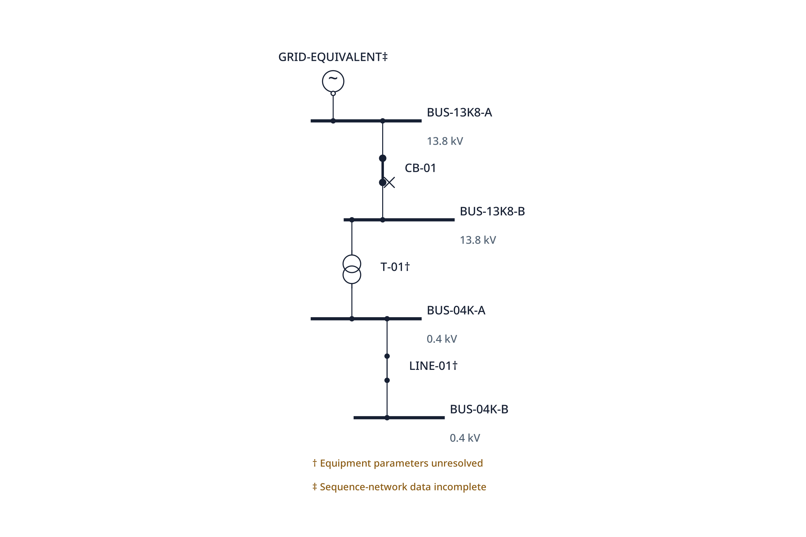
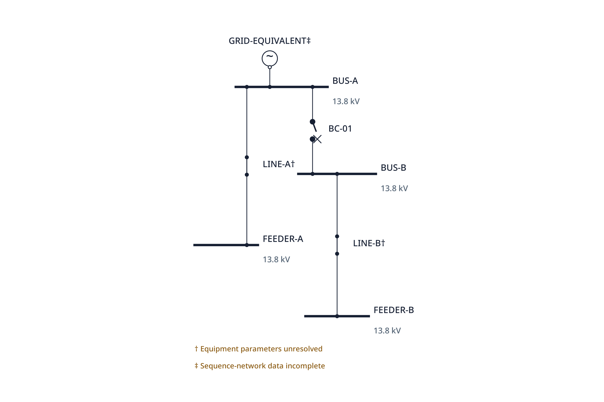
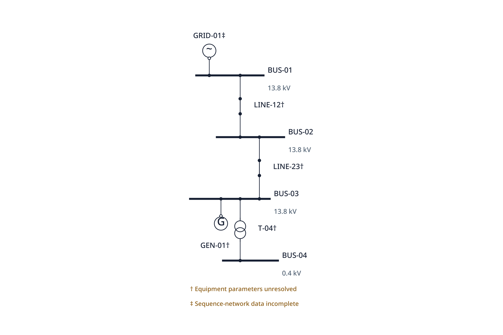

Physical network first
Buses, equipment, terminals and connectivity remain authoritative engineering data, separate from drawing geometry.
A native Windows engineering workbench for building electrical network models, preparing single-line diagrams and running supported short-circuit and protection studies.
Buses, equipment, terminals and connectivity remain authoritative engineering data, separate from drawing geometry.
Single-line editing, perpendicular bays, terminal-aware routing, editable labels, undo/redo and vector export.
Supported short-circuit and protection calculations with explicit input requirements, validation and documented limits.



PFA provides a desktop editor, canonical electrical network model, terminal-aware single-line layout, supported symmetrical-component short-circuit studies and selected protection calculations. It does not currently claim full IEC 60909 coverage, AC/DC load flow, OPF, N-1 contingency analysis or complete end-to-end modelling for every equipment category.
Symbol descriptors and third-party assets carry provenance. IEC 60617 conformance is not claimed where symbol-by-symbol verification has not been completed.
Source code is public under the GNU General Public License. QElectroTech elements, Qt and other third-party packages retain their independent licenses and notices.